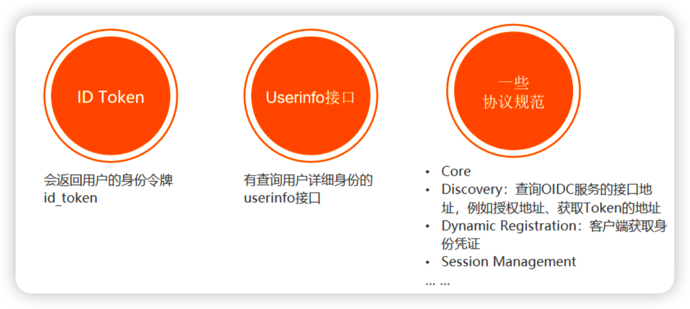
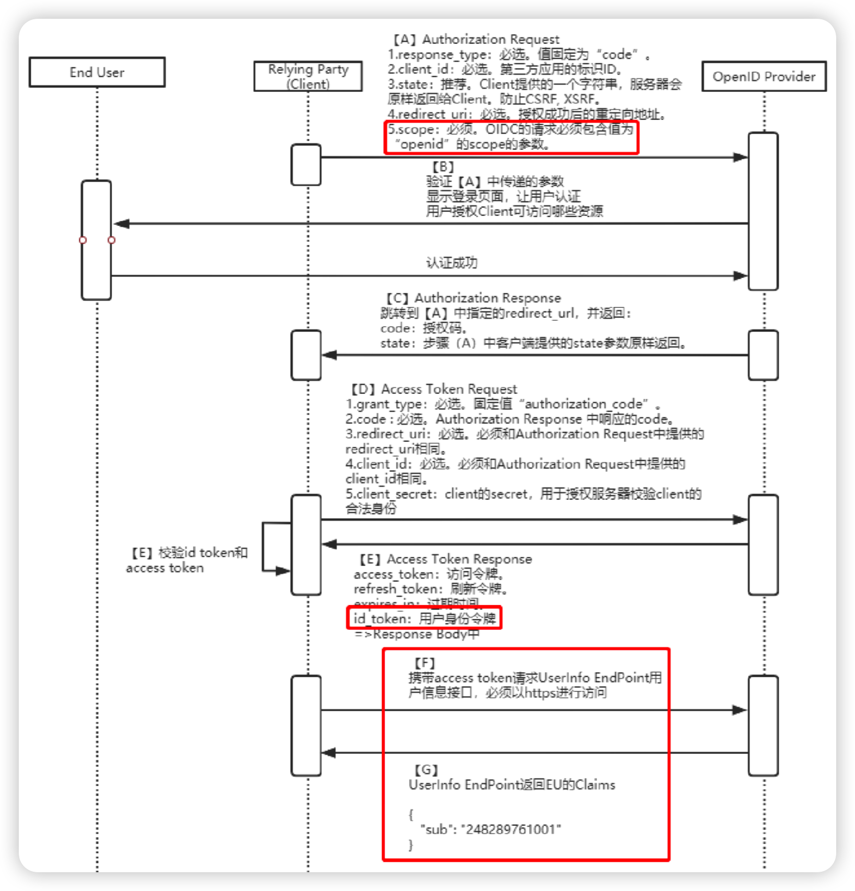
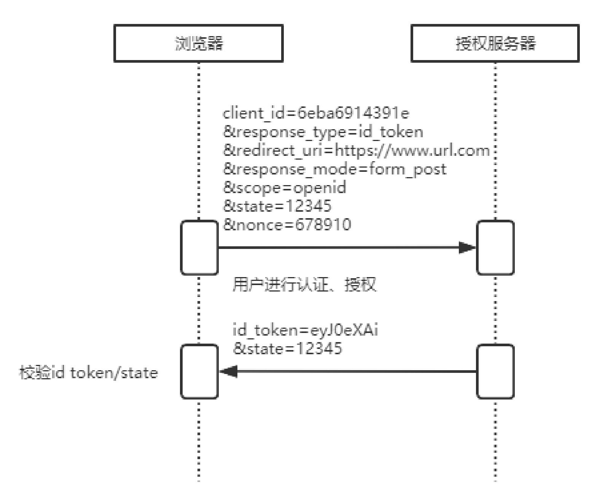
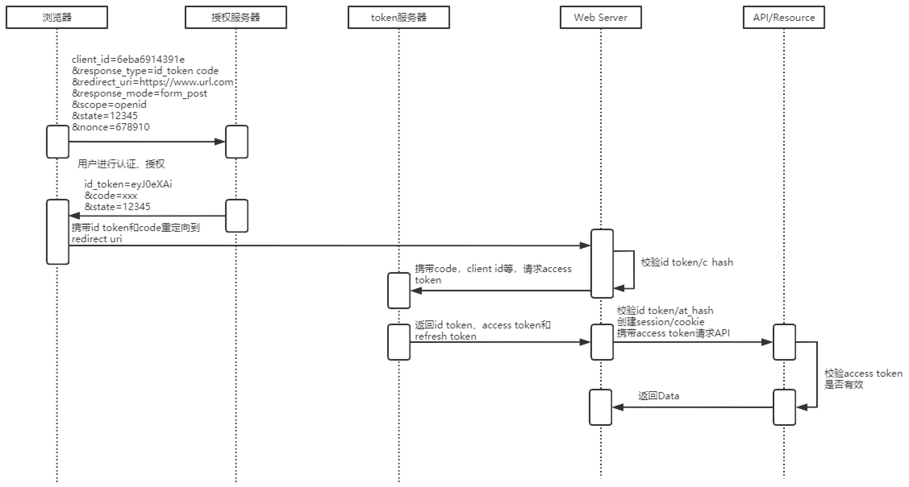
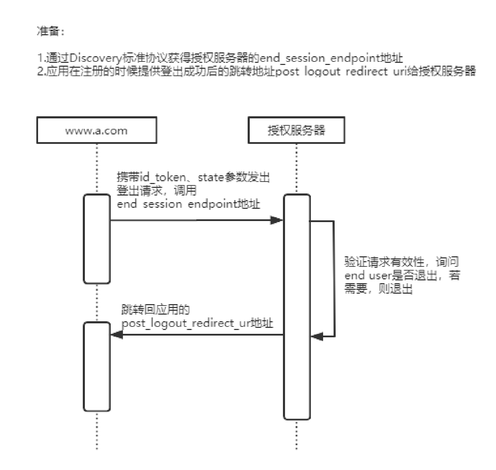
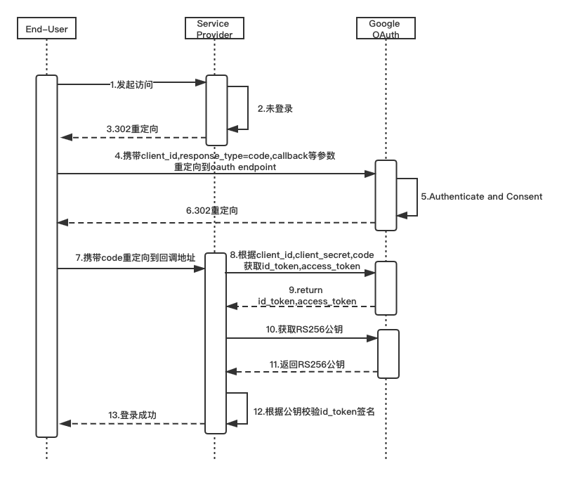
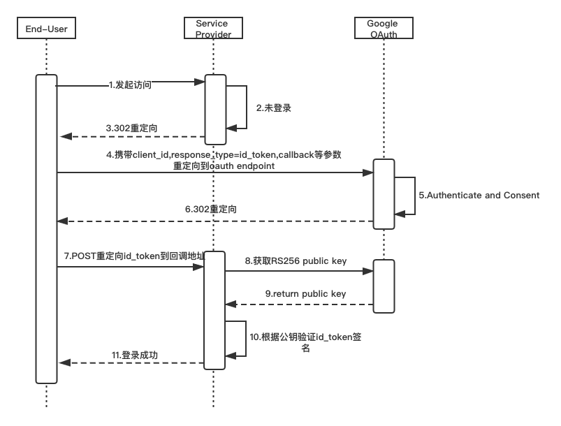
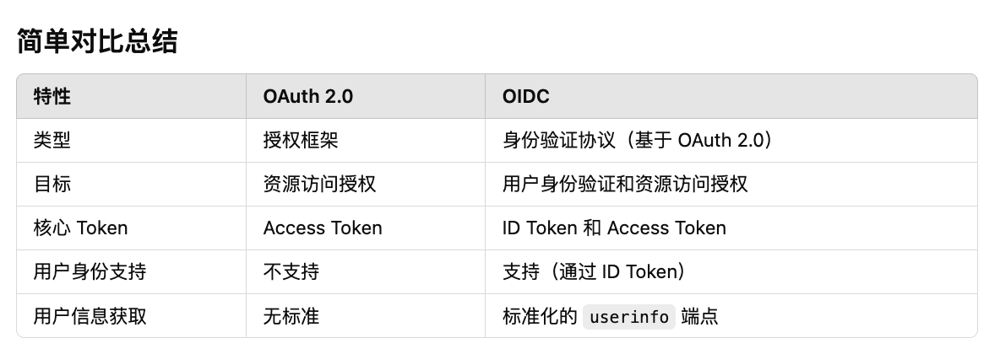

OIDC(OpenID Connect)
检查结论与修正点
原文的主线是正确的：OIDC 是建立在 OAuth 2.0 之上的身份认证协议，核心扩展是 id_token 和标准化的用户信息获取方式。需要修正和补充的点主要有：
- 「微信登录第三方软件便是 OIDC 标准实现」这个说法不严谨。微信开放平台登录/网页授权更接近 OAuth 2.0 风格的三方登录，通常返回
access_token、openid、unionid等，并不等同于标准 OIDC；Google 登录是更典型的 OIDC 应用。 UserInfo Endpoint应使用access_token作为 Bearer Token 访问，不是携带id_token查询用户详细信息。- OAuth 2.0 的
access_token不一定是 JWT，可能是不透明字符串。只有在授权服务器采用 JWT access token 时，才可解析出类似 JSON 的 claims。 - 隐式流程和混合流程仍属于 OIDC Core 规范内容，但现代安全实践中不应作为默认推荐方案。当前默认优先使用 Authorization Code Flow，并结合 PKCE。
- 原文登出部分把 Session Management 和 RP-Initiated Logout 混在一起。真正由 RP 主动发起跳转登出的规范是 RP-Initiated Logout；Session Management 主要用于监控 OP 登录状态变化。
- ID Token 校验内容不完整，需要补充签名、
iss、aud、exp、nonce、azp、at_hash/c_hash等校验点。 - 原文存在少量拼写和格式问题，例如
Oauth应写作OAuth，Autherization应写作Authorization，Implici应写作Implicit，Hybrid Flow[多了方括号。
OIDC 介绍
OpenID Connect，简称 OIDC，是建立在 OAuth 2.0 之上的身份认证层。OAuth 2.0 解决的是「授权」问题：第三方客户端如何代表用户访问受保护资源；OIDC 在此基础上解决「认证」问题：第三方客户端如何确认当前登录用户是谁。
可以简化理解为：
1 | OIDC = OAuth 2.0 授权框架 + 身份认证层 + 标准化用户信息接口 |
OIDC 客户端通过在授权请求中加入 scope=openid 来声明这是一次 OIDC 认证请求。OP 完成用户认证后，会向客户端返回 id_token。id_token 是一个 JWT，里面包含用户身份、签发方、受众、过期时间等 claims，RP 可以通过校验它来确认用户身份。

OIDC 和 OAuth 2.0 的区别
OAuth 2.0 关注授权，核心产物是 access_token。客户端拿到 access_token 后，可以访问资源服务器上的受保护资源，例如读取用户头像、联系人或订单等。
OIDC 关注认证，核心产物是 id_token。客户端拿到 id_token 后，可以验证用户身份，并基于 sub 等 claims 建立本系统内的登录会话。
| 对比项 | OAuth 2.0 | OIDC |
|---|---|---|
| 核心目标 | 授权访问资源 | 认证用户身份 |
| 核心 token | access_token |
id_token，通常也会有 access_token |
| 用户是谁 | OAuth 2.0 本身不标准化身份信息 | 通过 id_token.sub 等 claims 表示 |
| 用户信息接口 | 不规定标准接口 | 标准化 UserInfo Endpoint |
| 请求标识 | 普通 OAuth scope | 必须包含 openid scope |
| 常见应用 | API 授权 | 单点登录、三方登录、身份联邦 |
需要注意：不要把「用 OAuth 2.0 做登录」直接等同于 OIDC。很多系统历史上会用 OAuth 2.0 的资源接口拿用户信息来完成登录，但这不是标准 OIDC。标准 OIDC 必须有 openid scope 和 id_token。
OIDC 协议族
OIDC 不只是一条认证流程，还包含一组配套规范：
| 规范 | 作用 |
|---|---|
| OpenID Connect Core | 定义核心认证流程、id_token、UserInfo Endpoint、claims 和安全要求 |
| OpenID Connect Discovery | 通过 .well-known/openid-configuration 发现 OP 的端点、JWKS 地址和能力 |
| OpenID Connect Dynamic Client Registration | 动态注册客户端，获取 client_id 等客户端信息 |
| OpenID Connect RP-Initiated Logout | RP 主动把用户重定向到 OP 的登出端点 |
| OpenID Connect Session Management | RP 监控用户在 OP 的登录状态变化 |
| OpenID Connect Front-Channel Logout | OP 通过浏览器前端通道通知 RP 登出 |
| OpenID Connect Back-Channel Logout | OP 通过后端通道通知 RP 登出 |
典型的 Discovery 地址如下：
1 | https://{issuer}/.well-known/openid-configuration |
Discovery 文档通常会包含：
| 字段 | 含义 |
|---|---|
issuer |
OP 的签发者标识，必须和 id_token.iss 匹配 |
authorization_endpoint |
发起认证请求的授权端点 |
token_endpoint |
用授权码换取 token 的端点 |
userinfo_endpoint |
获取用户 claims 的端点 |
jwks_uri |
OP 公钥集合地址，用于验证 ID Token 签名 |
end_session_endpoint |
RP-Initiated Logout 的登出端点，不是所有 OP 都支持 |
response_types_supported |
支持的 response_type |
scopes_supported |
支持的 scope |
id_token_signing_alg_values_supported |
支持的 ID Token 签名算法 |
OIDC 角色
OIDC 中有三个核心角色：
| 角色 | 全称 | 含义 |
|---|---|---|
| EU | End User | 最终用户 |
| RP | Relying Party | 依赖 OP 进行身份认证的客户端，也就是第三方应用 |
| OP | OpenID Provider | 提供身份认证服务的身份提供方 |
在 OAuth 2.0 的术语里，OP 同时承担 Authorization Server 的角色；如果 UserInfo 也由同一服务提供，它也相当于一个受保护资源服务。
核心概念
ID Token
ID Token 是 OIDC 相对 OAuth 2.0 最核心的扩展。它是 OP 签发给 RP 的身份令牌，通常采用 JWT 格式，用来说明「OP 已经认证过这个用户，并把认证结果发给指定客户端」。
典型 ID Token payload 示例：
1 | { |
常见 claims：
| Claim | 必选/常见 | 含义 |
|---|---|---|
iss |
必选 | 签发者，必须和 Discovery 的 issuer 一致 |
sub |
必选 | 用户在该 OP 下的稳定唯一标识 |
aud |
必选 | 令牌受众，通常是 RP 的 client_id |
exp |
必选 | 过期时间 |
iat |
必选 | 签发时间 |
auth_time |
条件必选 | 用户完成认证的时间，使用 max_age 时必须返回 |
nonce |
条件必选 | 防重放值，隐式/混合流程必须重点校验，授权码流程也建议使用 |
azp |
条件必选 | 授权展示方，多个 audience 或特定场景需要校验 |
at_hash |
条件必选/可选 | Access Token hash。隐式/混合流程从授权端点返回 access token 时需要校验；授权码流程中若 token endpoint 返回的 ID Token 包含该 claim，也可用于绑定校验 |
c_hash |
条件必选 | Authorization Code hash，混合流程从授权端点返回 code 和 ID Token 时用于绑定校验 |
Access Token
Access Token 是授权令牌，用于访问资源服务器或 UserInfo Endpoint。它的格式由授权服务器决定，可能是 JWT，也可能是不透明字符串。RP 不应把 access token 当作用户身份凭证使用。
如果某个授权服务器采用 JWT access token，它可能长这样：
1 | { |
但这只是某类实现，不是 OAuth 2.0 或 OIDC 对 access token 的通用要求。
UserInfo Endpoint
OIDC 提供标准的 UserInfo Endpoint 来获取用户 claims。客户端访问该端点时，必须使用从 OIDC 认证流程中获得的 access_token，并按 Bearer Token 方式发送：
1 | GET /userinfo |
UserInfo 响应必须包含 sub。RP 使用 UserInfo 响应前，必须确认 userinfo.sub 和 id_token.sub 完全一致，否则不能使用该响应，避免 token 替换攻击。
示例响应：
1 | { |
OIDC 流程
基础流程
OIDC 的抽象流程主要有 5 步：
- RP 向 OP 发送认证请求。
- OP 对 EU 进行身份认证，并根据需要征求用户授权。
- OP 把认证结果返回给 RP。不同流程中返回内容不同，可能是
code、id_token、access_token的组合。 - RP 使用
access_token请求 OP 的 UserInfo Endpoint。 - UserInfo Endpoint 返回 EU 的 claims。
1 | +--------+ +--------+ |
Authentication Request 常见参数
OIDC 认证请求是在 OAuth 2.0 Authorization Request 的基础上扩展而来，常见参数如下：
| 参数 | 是否必选 | 说明 |
|---|---|---|
scope |
必选 | 必须包含 openid，可附加 profile、email、address、phone 等 |
response_type |
必选 | 决定使用授权码、隐式还是混合流程 |
client_id |
必选 | RP 在 OP 注册得到的客户端 ID |
redirect_uri |
必选 | OP 完成认证后的回调地址，必须和注册值匹配 |
state |
推荐 | 防 CSRF，并用于把响应和请求上下文绑定 |
nonce |
条件必选/推荐 | 防重放。隐式和混合流程通常必须使用，授权码流程也建议使用 |
prompt |
可选 | 控制是否强制登录、授权确认、选择账号等 |
max_age |
可选 | 要求用户最近一次认证不能超过指定秒数 |
login_hint |
可选 | 给 OP 的登录账号提示 |
acr_values |
可选 | 请求特定认证强度或认证上下文 |
三种认证流程
OIDC Core 定义了三类认证流程：Authorization Code Flow、Implicit Flow、Hybrid Flow。
Authorization Code Flow
Authorization Code Flow 是当前最推荐的 OIDC 流程。它先从授权端点返回 code，再由 RP 后端向 token endpoint 换取 id_token、access_token，必要时还会返回 refresh_token。这种方式不会把 token 暴露在浏览器前端重定向中，也允许 OP 在 token endpoint 对客户端进行认证。
现代实现建议同时使用 PKCE，即使是传统 Web 服务端应用也建议支持。PKCE 可以把授权码和发起认证的客户端实例绑定，降低授权码注入或授权码泄漏后的风险。

简化流程：
- RP 生成
state、nonce，如果启用 PKCE，还要生成code_verifier和code_challenge。 - RP 把浏览器重定向到 OP 的
authorization_endpoint。 - 用户在 OP 完成登录和授权。
- OP 将浏览器重定向回
redirect_uri，并携带code和state。 - RP 校验
state，向token_endpoint提交code、redirect_uri、客户端认证信息和code_verifier。 - OP 返回
id_token、access_token，以及可选的refresh_token。 - RP 校验 ID Token，创建本地登录会话。
- RP 可使用
access_token请求 UserInfo Endpoint 或业务 API。
Implicit Flow
Implicit Flow 会直接从授权端点把 id_token 或 access_token 返回给浏览器前端。OIDC Core 中仍定义了该流程，典型 response_type 是 id_token 或 id_token token。

这个流程历史上常用于纯浏览器应用，但现在不建议作为默认方案。原因是 token 会经过浏览器前端通道，暴露面更大；同时 response_type=token 这类直接在授权响应中返回 access token 的方式已经被 OAuth 2.0 安全最佳实践明确降级。现代 SPA/移动端更应使用 Authorization Code Flow + PKCE。
Hybrid Flow
Hybrid Flow 是 Authorization Code Flow 和 Implicit Flow 的组合，会在授权端点同时返回 code 和部分 token，典型 response_type 包括 code id_token、code token、code id_token token。

Hybrid Flow 可用于需要前端立即获得认证结果，同时后端继续换取 token 的场景。由于它仍会让部分 token 或 ID Token 经过浏览器前端通道，实现复杂度和安全校验要求更高，必须校验 nonce、c_hash、at_hash、state 等绑定关系。
三种流程对比
| 特性 | 授权码模式 | 隐式模式 | 混合模式 |
|---|---|---|---|
| 所有 token 全部从授权端点返回 | no | yes | no |
| 所有 token 都从 token endpoint 返回 | yes | no | no |
| token 不暴露给浏览器前端通道 | yes | no | no |
| OP 可以在 token endpoint 认证客户端 | yes | no | yes |
| 支持 refresh token | yes | no | yes |
| 是否推荐作为现代默认方案 | yes，配合 PKCE | no | 特定场景谨慎使用 |
| 典型使用场景 | 服务端 Web、SPA、移动端、桌面端 | 旧式浏览器应用 | 特定高阶身份场景 |
response_type 与流程对应关系
response_type 值 |
Flow |
|---|---|
code |
Authorization Code Flow |
id_token |
Implicit Flow |
id_token token |
Implicit Flow |
code id_token |
Hybrid Flow |
code token |
Hybrid Flow |
code id_token token |
Hybrid Flow |
ID Token 校验
RP 在使用 ID Token 建立本地会话前，必须完成校验。不同库会自动完成一部分，但理解校验项很重要。
1. 获取 OP 元数据和公钥
先通过 Discovery 获取 OP 配置：
1 | https://{issuer}/.well-known/openid-configuration |
从中读取：
1 | { |
再从 jwks_uri 获取 JWK Set，根据 ID Token header 中的 kid 选择对应公钥。
ID Token header 示例：
1 | { |
2. 校验签名和算法
使用 OP 的公钥校验 JWT 签名，确认 token 确实由 OP 签发且未被篡改。同时要确认 alg 是该 OP Discovery 文档中允许的算法，不能信任攻击者在 JWT header 中随意声明的算法。
3. 校验标准 claims
必须校验：
| 校验项 | 要求 |
|---|---|
iss |
必须等于 Discovery 中的 issuer |
aud |
必须包含当前 RP 的 client_id |
exp |
当前时间不能超过过期时间 |
iat |
签发时间应合理，可结合本地时钟偏移容忍 |
nonce |
如果请求中发送了 nonce，响应 ID Token 必须匹配 |
azp |
多 audience 或 OP 要求时，必须等于当前授权展示方 |
auth_time |
请求使用 max_age 时必须存在，并满足认证时间要求 |
4. 校验绑定关系
如果隐式/混合流程在授权端点响应中同时返回 access_token 和 ID Token，需要校验 at_hash，确认 access token 和 ID Token 属于同一次授权响应。授权码流程中，如果 token endpoint 返回的 ID Token 包含 at_hash，客户端也可以按规范使用它校验 access token 绑定关系；如果 OP 未返回该 claim，则不应把缺失本身直接视作协议错误。
如果使用 Hybrid Flow，并且授权端点响应中同时包含 code 和 ID Token，需要校验 c_hash，确认 authorization code 和 ID Token 绑定。
5. 创建本地会话
ID Token 校验通过后，RP 应使用 sub 作为用户在该 OP 下的稳定唯一标识。不要把 email 当作唯一主键，因为邮箱可能变更、可能未验证，也可能在不同身份源中重复。
OIDC 登出流程
OIDC 的登录会话通常涉及三层：
- RP 自己的本地应用会话，例如业务系统 Cookie。
- OP 的登录会话，例如 Google、企业 IdP、Keycloak、Authing 等身份提供方会话。
- 多个 RP 之间的单点登录/单点登出状态。
因此「退出登录」也要分清楚退出的是哪一层。
RP 本地登出
最基础的登出是 RP 清理本地 session 或 Cookie。这只能让用户退出当前应用，不一定会退出 OP，也不一定会退出其他已登录的 RP。
RP-Initiated Logout
RP-Initiated Logout 是 RP 主动请求 OP 登出的规范。RP 通常通过 Discovery 获取 end_session_endpoint，然后把浏览器重定向到该地址。

典型请求：
1 | GET https://op.example.com/logout? |
常见参数：
| 参数 | 说明 |
|---|---|
id_token_hint |
推荐传入。提示 OP 要退出哪个用户会话 |
post_logout_redirect_uri |
OP 登出后跳回 RP 的地址，必须与预注册值匹配 |
state |
可选。OP 回跳时原样返回，RP 用于关联登出请求和响应 |
client_id |
可选。部分 OP 在没有 id_token_hint 时用它识别客户端 |
注意：OP 是否真的结束用户在 OP 的全局会话，取决于 OP 策略和用户交互。RP 不能只依赖跳转完成就假设所有系统都已退出。
Session Management、Front-Channel Logout、Back-Channel Logout
Session Management 不是 RP 主动登出的同义词，它主要用于 RP 通过浏览器 iframe 检查用户在 OP 的登录状态是否变化，并在发现状态变化后触发本地登出或重新认证。
Front-Channel Logout 是 OP 通过浏览器前端通道通知多个 RP 登出。Back-Channel Logout 是 OP 通过服务器后端通道通知 RP 登出，通常更可靠，但要求 RP 提供可被 OP 调用的后端登出接口。
实际系统中经常组合使用：
- 用户点击 RP 的退出按钮：RP 清理本地会话，并可重定向到 OP 的
end_session_endpoint。 - 用户在 OP 或其他 RP 退出：OP 通过 Front-Channel/Back-Channel/Session Management 通知当前 RP。
- RP 收到通知后清理本地会话。
Google 登录
Google 登录是 OIDC 的典型实现之一。Google 的 issuer 通常是：
1 | https://accounts.google.com |
Google Discovery 地址：
1 | https://accounts.google.com/.well-known/openid-configuration |
常见端点：
| 端点 | 作用 |
|---|---|
authorization_endpoint |
发起 Google 登录 |
token_endpoint |
用授权码换取 token |
userinfo_endpoint |
获取用户信息 |
jwks_uri |
获取 Google ID Token 签名公钥 |
Authorization Code Flow
Authorization Code Flow 是服务端 Web 应用最常见的 Google 登录方式。

简化流程：
- 用户访问业务系统，业务系统发现未登录。
- 业务系统生成
state、nonce，并将浏览器重定向到 Google 授权端点。 - 用户在 Google 完成登录和授权。
- Google 重定向回业务系统回调地址，携带
code和state。 - 业务系统校验
state，用code请求 Google token endpoint。 - Google 返回
id_token和access_token。 - 业务系统获取 Google JWKS，校验
id_token。 - 校验通过后，根据
sub绑定或创建本地用户，并创建本地 session。
Implicit Flow
Google 也支持过浏览器前端直接接收 ID Token 的方式，历史上常被称为 implicit flow 或 one-tap/sign-in 前端模式的一部分。

如果 ID Token 从浏览器客户端发送到后端，后端仍必须完整校验 ID Token。不要因为 token 来自前端 SDK 就跳过签名、issuer、audience 和过期时间校验。
现代新系统应优先选用 Authorization Code Flow + PKCE 或 Google Identity Services 当前推荐的集成方式，而不是自行新建隐式流程。
Google ID Token 校验
Google ID Token 校验要点：
- 从 Google Discovery 文档读取
jwks_uri，获取当前签名公钥。公钥会轮换，需要按 HTTP cache header 或库机制缓存。 - 校验 JWT 签名，确认
kid对应的公钥可验证签名。 - 校验
iss，Google ID Token 的 issuer 应为https://accounts.google.com或accounts.google.com。 - 校验
aud，必须等于当前应用的 Google OAuth Client ID。 - 校验
exp，不能接受过期 token。 - 如果请求中使用了
nonce，必须校验 ID Token 中的nonce。 - 如果使用 Google Workspace 域限制，校验
hdclaim 是否符合允许的域。 - 使用
sub作为用户唯一标识，不要使用email作为主键。
OIDC 和 OAuth 2.0 的区别示意

可以概括为：
- OAuth 2.0 只定义授权框架，
access_token是访问资源的凭证。 - OIDC 在 OAuth 2.0 上增加身份认证语义，
id_token是用户身份认证结果。 - OIDC 的 UserInfo Endpoint 使用
access_token访问，返回用户 claims。 - RP 建立本地登录态时，应依赖校验后的
id_token，并用sub绑定本地账号。 - 常见的 Google 登录是 OIDC 应用；微信登录等三方登录不一定是标准 OIDC。
实践建议
- 新系统默认使用 Authorization Code Flow + PKCE。
- 认证请求必须包含
openidscope。 - 始终使用
state防 CSRF，建议同时使用nonce防重放和授权码注入。 redirect_uri必须精确匹配预注册地址，不要使用过宽泛的通配规则。- 后端必须校验 ID Token 后再创建本地 session。
- UserInfo Endpoint 必须用
access_token调用，且要校验userinfo.sub == id_token.sub。 - 不要把 access token 当作登录态，不要把 ID Token 当作访问业务 API 的授权凭证。
- 不要把
email当作跨身份源唯一主键；优先使用issuer + sub。 - 保存 token 时按敏感凭证处理，传输必须使用 HTTPS。
- 如果需要单点登出，优先确认 OP 支持哪类登出规范，再设计 RP 本地 session 清理逻辑。
参考
- OIDC Core: https://openid.net/specs/openid-connect-core-1_0.html
- OIDC Discovery: https://openid.net/specs/openid-connect-discovery-1_0.html
- OIDC RP-Initiated Logout: https://openid.net/specs/openid-connect-rpinitiated-1_0.html
- OIDC Session Management: https://openid.net/specs/openid-connect-session-1_0.html
- Google OpenID Connect: https://developers.google.com/identity/openid-connect/openid-connect
- OAuth 2.0 Security Best Current Practice: https://www.rfc-editor.org/rfc/rfc9700.html